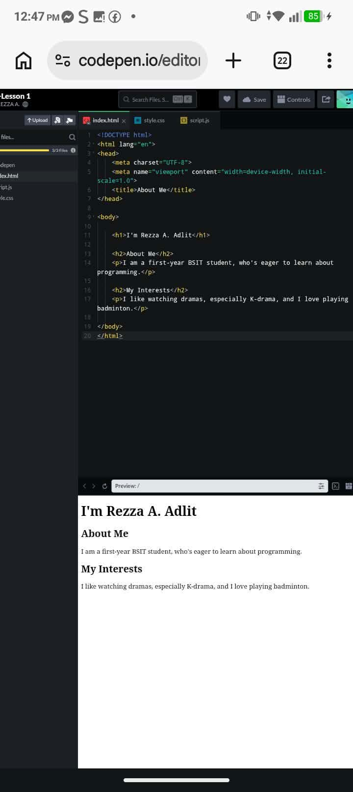
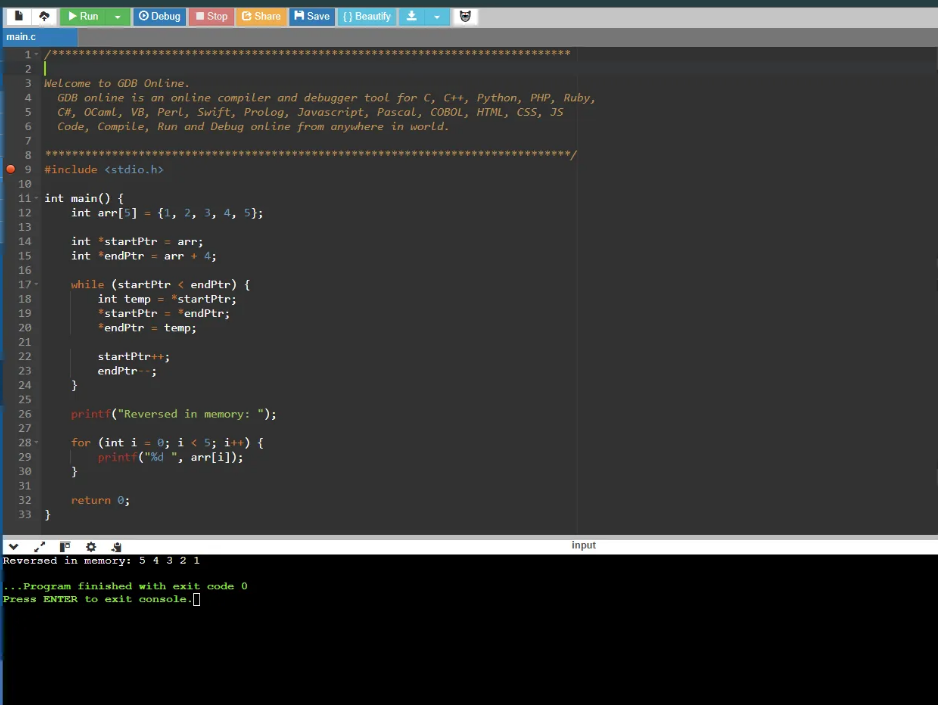

HTML About Me Page
A simple personal page introducing me, sharing that I am a first-year BSIT student, and describing my interests in K-drama and badminton.
HTML
Coursework & practice
A small selection of my HTML and C programming practice.
Practice work
A simple personal page introducing me, sharing that I am a first-year BSIT student, and describing my interests in K-drama and badminton.
HTML
A C programming exercise that uses pointers to reverse the values in an array, displaying the result as 5, 4, 3, 2, 1.
C Language